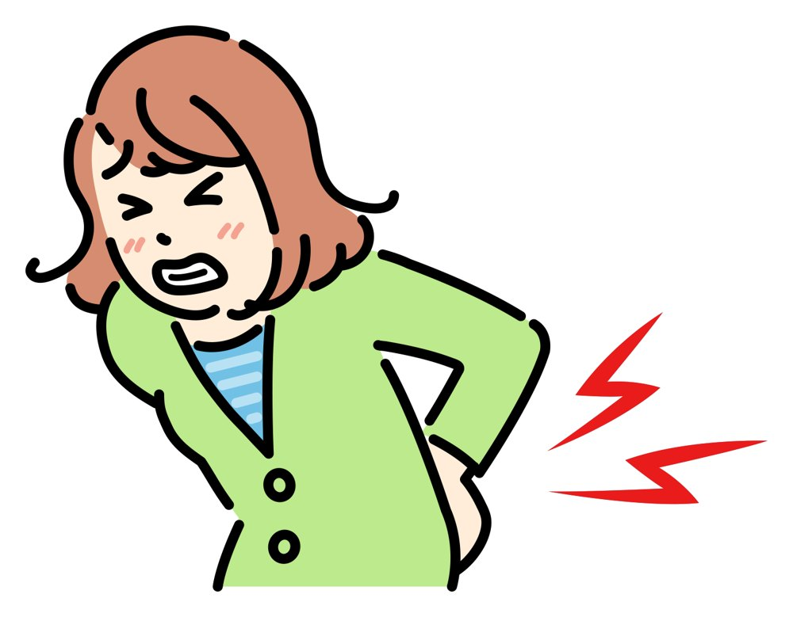

症状から探す｜腰
ぎっくり腰・腰の痛み
急に動けなくなったら、まずご相談ください
くしゃみをした、床の物を拾おうとした。ぎっくり腰は、ちょっとした動きで突然起こります。でも、きっかけは小さくても、その前から腰に負担がたまっていることが少なくありません。
当院では、今の痛みをやわらげることと、くり返さないためのカラダづくりの両方を考えます。
予約優先制です。お電話：011-384-5454 日曜・祝日も受付


こんなお悩みはありませんか
ひとつでも当てはまったら、
ご相談ください
- かがんだ瞬間に腰に強い痛みが走った
- 痛くて寝返りや立ち上がりがつらい
- 1年に何度もぎっくり腰をくり返している
- 長く座っていると腰が重く、立つときに伸ばしにくい
- 「骨には異常がない」と言われたのに痛みが続いている
- ぎっくり腰は、ユガミや姿勢のくせに疲れや冷えが重なって起こります
- まず痛みをやわらげ、くり返しにくい腰を目指します
- 足のシビレや力が入らないときは、先に病院へ
痛みの理由
腰の症状には、必ず理由があります
腰は、上半身の重さを支えながら、曲げる・ひねるといった動きの中心になる場所です。骨盤のユガミや、反り腰・猫背といった姿勢のくせがあると、腰の一部の筋肉や関節にばかり負担が集中します。
そこに疲れ・冷え・寝不足・急な動作などが重なると、ある日突然、ぎっくり腰として表に出ることがあります。
- 骨盤のユガミ骨盤が前や後ろに傾くと、反り腰・猫背になり、腰の一部に負担が集まります。
- 腹筋が使えていない腹筋を使わず背中の筋肉だけでカラダを支えると、腰への負担が大きくなります。
- 座りっぱなし・中腰デスクワークや中腰の作業が続くと、腰の筋肉がかたくなりやすくなります。
当院での施術
今の痛みとその先まで
- STEP 1お話と検査いつ・どんな動きで痛めたか、どこが痛いかをうかがい、姿勢や動きを確かめます。分かったことは、言葉で分かりやすくお伝えします。
- STEP 2痛みをやわらげる施術痛みが強い時期は、無理にカラダを動かしません。ハイボルトなどの電気治療や手技で、まずは痛みをやわらげることを目指します。
- STEP 3くり返しにくいカラダへ痛みが落ち着いてきたら、骨ぴか整体で骨盤や背骨のユガミを整え、腹筋の使い方や座り方をお伝えします。
くり返さないためには、施術だけでなく、普段のカラダの使い方も大切です。正しいカラダの使い方／骨ぴか整体（骨格矯正）
ご自分でできること
痛めた直後に気をつけたいこと
- 痛みが強いうちは、無理に伸ばしたり、ストレッチをしたりしない
- 痛い場所を強くもんだり、たたいたりしない
- 熱っぽさがあるうちは長湯や飲酒はひかえめに
- 横向きで膝を軽く曲げるなど、楽な姿勢で休む
- ずっと寝たままにせず、痛みの出ない範囲で少しずつ動く
こんなときは先に病院へ
- 足のシビレが強い、足に力が入らない
- 排尿・排便のトラブルがある
- 熱がある、じっとしていても痛みがどんどん強くなる
- 高い所から落ちたなど、強い衝撃で痛めた
当てはまるときは、先に医療機関を受診してください。迷ったときは、お電話やLINEでご相談ください。
保険について
健康保険は使えますか？
「急に痛めた」など、原因がはっきりしている腰の痛みは、健康保険の対象になることがあります。長く続いている腰痛や、原因がはっきりしない慢性的な腰痛は対象外です。
保険が使えるかは、症状と原因によります。受付で一緒に確認しますので、お気軽にお聞きください。マイナ保険証または資格確認書をお持ちください。

よくあるご質問
よくあるご質問
ぎっくり腰になった当日でも行っていいですか？
はい、大丈夫です。動くのがつらいときは、ご予約のときにお伝えください。無理のない姿勢で受けていただけるようにします。
どのくらいで良くなりますか？
痛みの強さや、くり返しているかどうかで変わります。初回に痛みの強さ（ペインスケール）を確認し、通う目安をお伝えします。
温めた方がいいですか？冷やした方がいいですか？
痛めた直後で熱っぽさがあるときは、温めすぎないようにしましょう。どちらがよいかは状態によるので、来院時にお伝えします。

つらいときはがまんせずにご相談ください
予約優先制 〒067-0031 北海道江別市元町32-1 無料駐車場12台 日曜・祝日も受付